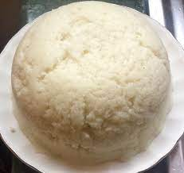

Ugali (African Cake) for 2
Ugali indgredients
- Maize Flour 1 litre cup
- Water 1 Litre
Procedure
- Boil your water inside a pot till boiling point
- Add your flour and start stiring until you notice the water is gone and the mixture is somehow softly rigid
- Keep stiring the mixture until you notice their is an aroma coming out it might take 10mins depending on your heat magnituted
- You will notice that the pot's base has a layer and it's turning brown in color, This shows that you are ready
- Take Out your Ugali its ready for serving
The Ugali(African Cake) may be served with meat, kale, cabbage and beans depending on your taste
Top
Home | Next